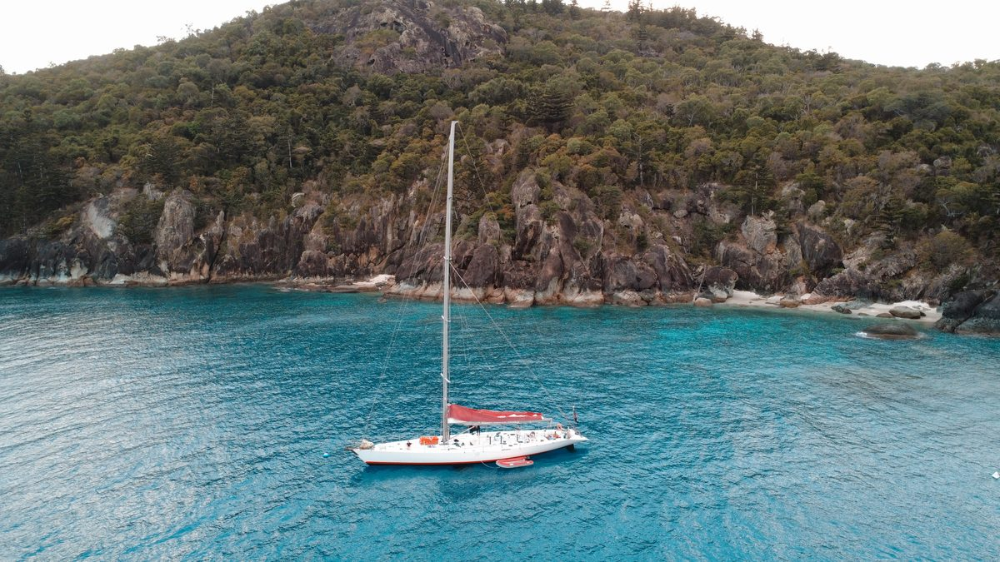
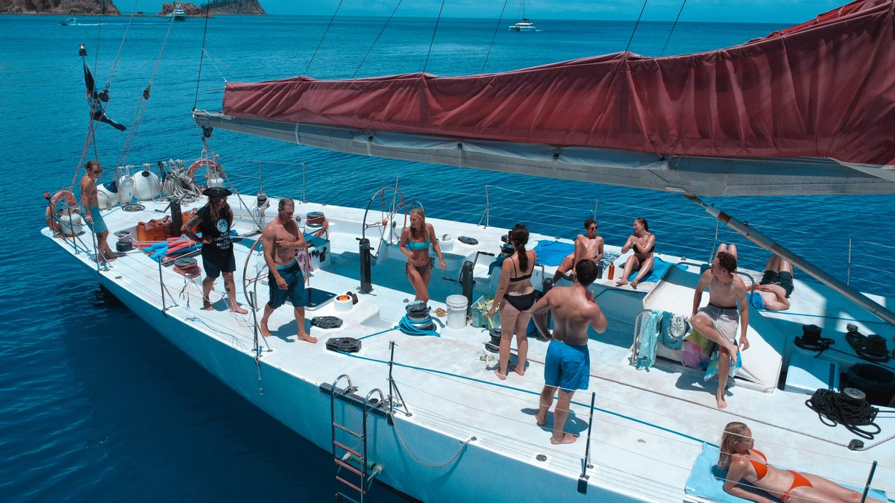
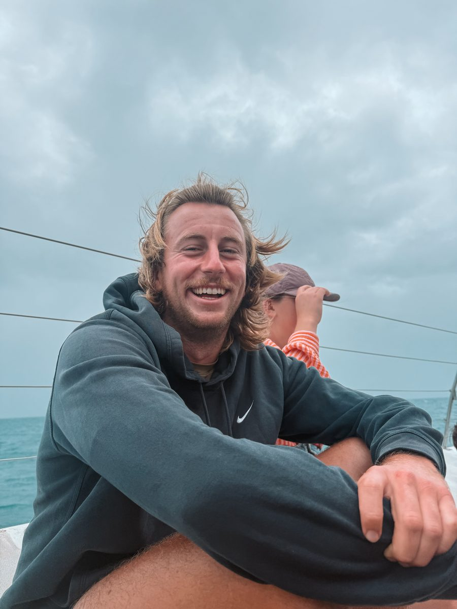
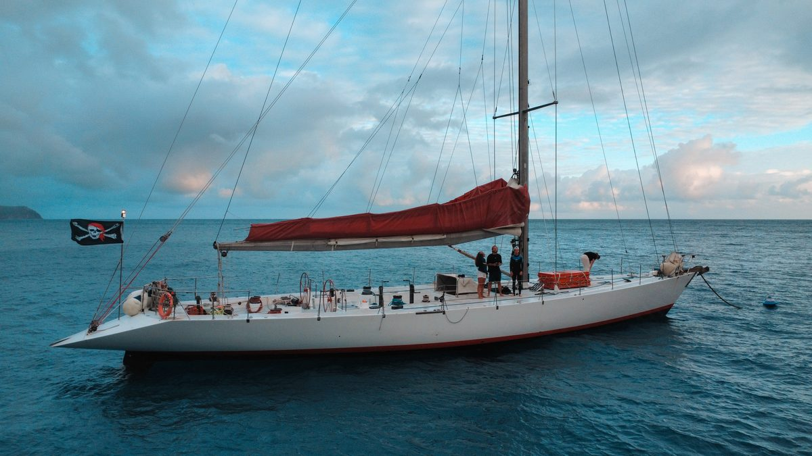

Ce que c'est, et d'où on part
Les îles Whitsunday, au large du Queensland, se découvrent en bateau. On est partis d'Airlie Beach, la ville d'où partent la plupart des croisières, à bord d'un voilier de la compagnie Matador, pour deux jours et une nuit en mer.

C'était une étape de mon road trip de trois semaines sur la côte est, et c'est l'un des deux moments qui valaient le plus le détour de tout le voyage.
Le prix et ce qui est compris
430 dollars australiens par personne, pour deux jours complets : départ le samedi à 8 h 30, retour le dimanche à 16 h.
Les repas sont compris : le déjeuner et le dîner du samedi, puis le petit déjeuner et le déjeuner du dimanche. Tu n'as rien à prévoir pour manger à bord.
Le matériel de snorkeling est compris, combinaison incluse, et on n'a eu aucun supplément à payer sur place.
Pas de boissons particulières incluses en plus des repas, mais tu peux apporter ta propre nourriture et tes boissons à bord.
Le programme des deux jours
Whitehaven Beach. Premier grand arrêt, et on est montés au point de vue de Hill Inlet pour voir celle qu'on présente souvent comme la plus belle plage du monde. Malheureusement, on n'a pas eu beau temps ce jour là : prévois que la météo puisse jouer contre toi, c'est la loterie de toutes les croisières.

Trois spots de snorkeling sur la Grande Barrière de corail, enchaînés le dimanche matin. C'est le cœur de la croisière : on a vu un poisson napoléon, des tortues et énormément de coraux. Ce sont parmi les plus beaux spots de snorkeling que j'aie faits de ma vie, et l'un des moments les plus mémorables de mon road trip. On avait une combinaison pour la mise à l'eau. En octobre, les méduses ne sont pas dangereuses dans les Whitsundays, mais renseigne toi auprès de l'équipage si tu pars à une autre période.
La soirée du samedi n'a rien d'exceptionnel : un peu de musique sur le pont, le temps de faire connaissance, et tout le monde se couche assez tôt. C'est très simple, et c'est aussi ce qui fait le charme de la nuit en mer.
La vie à bord
On était un groupe d'une vingtaine de passagers, avec trois ou quatre membres d'équipage. L'ambiance est plutôt sympa, et c'est facile de faire connaissance quand on partage le même pont pendant deux jours.

Si tu as le mal de mer, sois prévenu. Un voilier bouge beaucoup plus qu'un gros bateau à moteur, et à un moment, la mer s'est agitée et ça a bien tangué. Prévois de quoi te soulager si tu y es sensible.

La nuit à bord, tout le monde dort ensemble, dans la cale du bateau. Côté sanitaires, deux toilettes et deux douches pour une vingtaine de personnes : les douches se prennent très vite.
Le dimanche, réveil tous ensemble, puis la matinée de snorkeling avant le retour à Airlie Beach.
Les repas sont de bonne qualité, mais simples. Ne t'attends pas à de la gastronomie, plutôt à des plats généreux et bien faits pour une journée en mer.
Une ou deux nuits, et comment réserver
Je la referais sans hésiter. Si je pouvais, je partirais sur deux nuits, même si le budget est forcément plus élevé.

Pour comparer les bateaux et les durées avant de réserver, j'ai utilisé l'application BookMe.
On a réservé seulement quelques jours avant le départ, et ça a suffi en octobre. En haute saison, prends un peu plus d'avance : les bateaux peuvent vite être complets.
Les erreurs à éviter
À compléter : ce que tu ferais autrement si tu repartais.
Tu veux qu'on construise ton voyage ensemble ?
Ce guide te donne la trame. Si tu veux aller plus loin, je monte ton itinéraire avec toi : le tracé étape par étape, les hébergements, les trajets entre les villes et les activités qui valent vraiment la journée.
On part de tes dates, de ton budget et de ce que tu as envie de vivre. Tu repars avec un programme prêt à suivre, en sachant ce qu'il faut réserver en avance et ce qui peut attendre d'être sur place.
Trois formules, à partir de 59 € pour un avis sur ton plan, 249 € pour l'itinéraire complet. Premier échange gratuit, et sans engagement.
Les liens et le matériel cités
Les plateformes de réservation, eSIM, banques et assurances que j'utilise en voyage sont réunies sur une seule page, avec mes codes de parrainage.
Page vérifiée et mise à jour le .